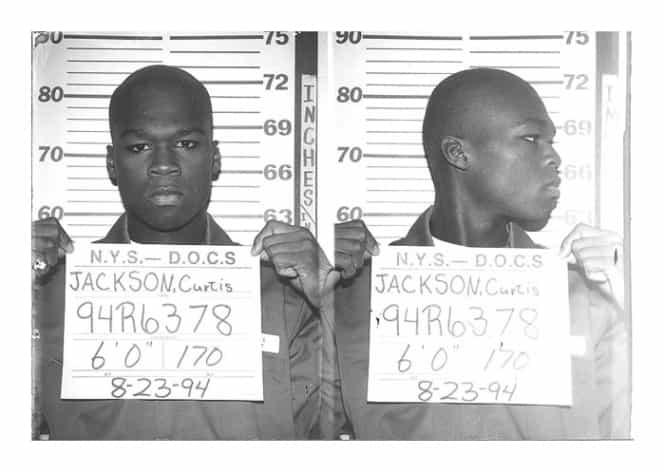

David is a strength coach and bestselling Men's Health author. You can follow him at HowToBeast.com.


Curtis Jackson was born and raised in the South Jamaica neighborhood of Queens, New York. He was raised by his mother, a cocaine dealer and a lesbian. She died when he was only 9, and he moved in with his grandparents.
It didn’t take long for him to get involved in the street life. “When I wasn’t killing time in school, I was sparring in the gym or selling crack on the strip,” he recalls. At the age of 16, he was caught with a gun while walking through the metal detectors at his high school. His grandmother found out, and sent him to a correctional boot camp.
He soon left, and gave himself the nickname 50 Cent, a metaphor for “change”. At 21, he began rapping in his friend’s basement, and quickly recognized his innate talent for making music. Three years later, in 1999, a group of producers working for Columbia Records noticed him and signed him to a record deal.

But it didn’t last. On May 24, 2000 Jackson was in the car with his friend. He got out to fetch some jewelry from his grandmother’s house. When he returned, he sat back down, and another car pulled up beside them.
A gunman got out, walked up to the left side of Jackson’s car, and proceeded to empty the entire clip of a 9mm handgun through the window. Jackson was hit 9 times, including a shot to the head that split through his left cheek and left a bullet fragment in his tongue.
He was rushed to the hospital, where he made a miraculous recovery and was released just days later. The bullet fragment was left in his tongue, however, due to caution for the many nerve endings in the area. When he got out, he was informed that Columbia Records had dropped him and shelved his upcoming album. They wanted to distance themselves from the violence and controversy that now surrounded his name.
Rather than getting discouraged and giving up his hopes and dreams, Jackson proceeded to shift the bleak circumstances into his favor. He started by retreating to his girlfriend’s house in Pennsylvania to recover, avoid the men that put the hit out on him, and plot his return to music.
He made a game plan. When he was fully healed, he headed to Canada, where he could record music under the radar. Jackson proceeded to record song-after-song. He reinvented himself, embracing his violent street rep and his newly realized voice, which featured a distinct hiss – a side effect of the remaining bullet fragment in his tongue.
In 2002, he independently released the product of all this plotting and hard work, a mixtape fittingly titled Guess Who’s Back? The mixtape gained instant popularity and launched Curtis “50 Cent” Jackson right back into the spotlight, where’d he stay for years to come.
Jackson was able overcome seemingly impossible circumstances and not only survive, but thrive, because of his knack for opportunism. In the bleakest of times, he sensed a rare opportunity, and then put everything he had into turning it into gold.
Most people live their lives on autopilot. When an unexpected opportunity comes their way – something they aren’t familiar with – they ignore it or decline it. They prefer to maintain their routine ways.
50 Cent demonstrated what could be done by embracing an opportunity that most people would never even see. Yet people turn down real, obvious opportunities every day. How often do your hear a friend or a colleague tell you that they were offered that dream position in Hawaii, but chose to decline it? They just felt more comfortable doing the same old, same old instead.
You have to avoid this trap. Whenever an opportunity presents itself, you must embrace it. It will make your life more exciting, more fulfilling, and more successful. Nobody remembers the man who took one job and stuck with it until he died, retired, or was fired. No, history remembers the bold and the brave.
You must be ready to identify a new opportunity at a moment’s notice. And, more importantly, you must be prepared to embrace it. 50 Cent did this more than once. The legendary rapper has time and time again displayed this skill, producing businesses, books, movies, video games, and more. He simply doesn’t let an opportunity pass him by. And that’s why he’s so successful.
When faced with a similar set of circumstances, the average man would’ve died off or faded into a dead-end life of crime and drugs. But 50 Cent didn’t. We must learn an important lesson from his success. We must do the same, and take advantage of every new opportunity that presents itself.
At the end of the day, there’s no such thing as luck. Luck is just a term that the weak and fearful use to describe those who take advantage of opportunities – those who aren’t slaves to their routines – those who dominate life.
While I don’t have an example as striking as 50 Cent’s, I certainly try to embody this principle and take on new opportunities whenever I can.
A few months ago, while I was working out, I received an email. It was an invitation to be part of a fashion show. They needed trainers to coach the models on stage as they sported the latest line of fitness apparel.
My initial instinct was to delete the email and continue my workout in peace. But I recognized this meant I’d be passing up an opportunity to do something different. So I quickly replied: “Count me in.”
I had no idea what to expect, but I showed up regardless. It took place at an upscale nightclub in downtown Boston. I won’t go into details, but it was an experience I’m glad I didn’t miss.
My time that night was split between hanging out with models, drinking free drinks, showcasing some exercises – and my muscles – on the runway, and having a crowd of college girls who attended the show competing for my attention.
Gentlemen, you must recognize opportunities and act on them. You must make your own luck. You can’t live the life of a mindless chump who passes on doing new things by default. It will be your end. You probably don’t realize how many opportunities are placed in your lap. You probably don’t realize how lucky you could be.
To take action and begin seizing these new opportunities, you simply have to keep your eyes open. When someone asks you if you want to do something or go somewhere and your initial instinct is to pass and say no – stop. Think about it. Are you saying no because it genuinely doesn’t interest you on any level? Or are you saying no because it’s something new and you’d rather stay inside your own little comfort zone?
Ask yourself: what would you be doing instead? Is it something so valuable that you can’t try this new thing out? Do you really have anything to lose? Be honest with yourself. Try new things. Make your own luck.
This is an excerpt from my new book Dominate. Click here for reviews and more info.
Read More: 3 Ways To Stop Being A Little Bitch